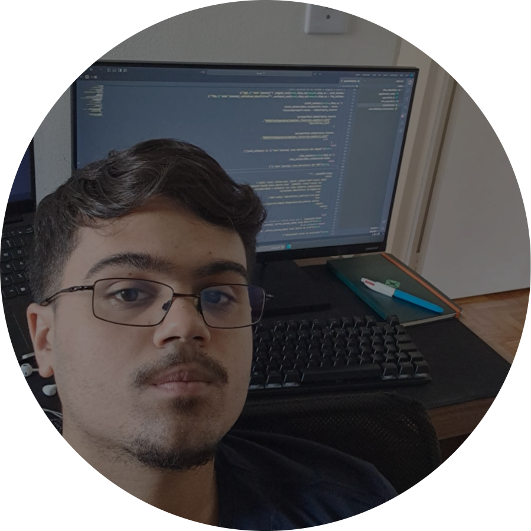

MUITO PRAZER, ARTHUR RESENDE GOMES.
Olá! Meu nome é Arthur Resende Gomes, sou estudante de Desenvolvimento de Software Multiplataforma na FATEC Osasco e tenho grande interesse pelo desenvolvimento de software, principalmente na área de back-end. Tenho conhecimento em Python para criação de APIs REST, automações e análise de dados, além de React e JavaScript para desenvolvimento de interfaces, Java aplicando conceitos de Design Patterns, bancos de dados relacionais e NoSQL, Git e metodologias ágeis.
Sou uma pessoa proativa, organizada e comunicativa, com facilidade para aprender novas tecnologias, trabalhar em equipe e me adaptar a diferentes desafios. Gosto de entender os problemas antes de buscar uma solução e estou sempre procurando evoluir meus conhecimentos por meio de projetos pessoais, estudos e novas experiências na área de tecnologia.
MINHAS ESPECIALIDADES.
FRONT-END
Tenho conhecimento em HTML, CSS, JavaScript, TypeScript e React, desenvolvendo interfaces responsivas e integradas a APIs REST. Atualmente utilizo React em projetos profissionais e pessoais, criando aplicações organizadas, reutilizáveis e de fácil manutenção, sempre buscando proporcionar uma boa experiência para o usuário e uma integração eficiente com o back-end.
BANCO DE DADOS
Tenho experiência com bancos de dados relacionais e NoSQL, utilizando MySQL, SQL Server, SQLite, MongoDB e Firestore. Já desenvolvi projetos acadêmicos, pessoais e profissionais envolvendo modelagem de dados, consultas, criação de relacionamentos, otimização de consultas e integração com aplicações web e APIs.
BACK-END
O back-end é a área que tenho maior afinidade. Desenvolvo APIs REST utilizando Python com FastAPI e possuo conhecimento em Django. Também tenho conhecimento em Java, aplicando conceitos de Design Patterns e SOLID no desenvolvimento. Além disso, desenvolvo automações com Pandas, Selenium, PyAutoGUI e Streamlit, utilizando Git no versionamento seguindo boas práticas de desenvolvimento.
EXPERIÊNCIA PROFISSIONAL/ACADÊMICA.
Atualmente atuo na área de Data Analytics, desenvolvendo automações e aplicações que tornam processos mais eficientes. Entre os projetos, desenvolvi uma automação em Python com Pandas, Selenium, PyAutoGUI e Streamlit que reduziu um processo de abertura de chamados de aproximadamente 2 horas para 30 minutos, além de participar do desenvolvimento de uma plataforma interna utilizando React, TypeScript, FastAPI, Firestore e Google Cloud Platform (GCP).
Além da experiência profissional, gosto de desenvolver projetos pessoais para colocar em prática novas tecnologias. Entre eles está o Gym Control, um sistema de gerenciamento para academias desenvolvido com React e FastAPI, além de outras automações e aplicações voltadas ao aprendizado contínuo e à evolução das minhas habilidades como desenvolvedor.